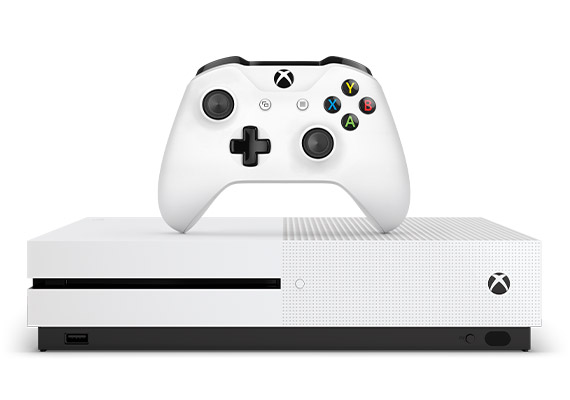

 Xbox One es la tercera videoconsola de sobremesa de la marca Xbox, producida por Microsoft. Forma parte de las videoconsolas de octava generación, fue presentada por Microsoft el 21 de mayo de 2013. Es la sucesora de la Xbox 360 y actualmente compite con PlayStation 4 de Sony y Nintendo Switch de Nintendo. Su salida a la venta fue el 22 de noviembre de 2013 a un precio de 499 dólares. Hay un nuevo nivel de interactividad de Mixer, se pueden compartir las capturas en Twitter, hay torneos abiertos, se pueden poner los temas en un horario, hay mejoras al Narrador, mejoras en Edge, hay más audio inmersivo y hay un filtrado avanzado para propietarios de clubes.